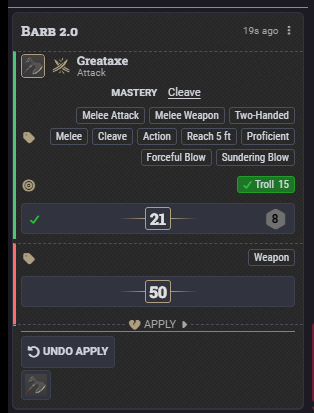
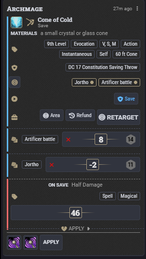
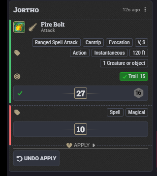

Cleaner cards.
A smoother turn.
Follow the whole action in one place, with updated automation for Player’s Handbook 3.0.0.
Less chat.
More play.
One action, one place to follow it. Attacks, saving throws, damage and effects stay together, with reactions and Apply / Undo right where you need them.
Keep the decisions. Let the automation handle the follow-through.
Requirements and updating →Your hit.
Your chosen blows.
Brutal Strike choices, the attack roll and damage stay together. Apply the result, or Undo when you need to make a correction.


Every save.
One shared action.
See each creature’s result beside the spell’s damage. Reaction icons stay together below, ready when a failed save needs a little help.


Cast. Hit.
Keep things moving.
A spell attack, its target and damage in one compact card. The same familiar controls keep the next step close at hand.


Healing and temporary HP use the same grouped approach. Choose your attack, save and healing layouts in Module Options. Select any screenshot to view it at full size.
Your updated features.
Connected again.
The new book moves several activities, upgrades and effects. This update reconnects the module’s assistance to those features and lets the book handle benefits it now supplies itself.
- Barbarian: updated Brutal Strike effects, chosen-blow tags and native Reckless Attack Advantage.
- Bard and Cleric: native rest recovery, updated Warding Flare temporary HP, Channel Divinity and Sear Undead, Divine Strike and Improved Potent Spellcasting.
- Druid: Starry Form actions and Chalice healing, Primal Strike, Wrath of the Sea, Stormborn and Oceanic Gift. Keep choosing your land in our Long Rest dropdown, with prepared spells and Nature’s Ward resistance updated together.
- Monk: updated Deflect Attacks/Energy, Flurry of Blows, Empowered Strikes and Mercy features, including Poisoned and eligible free Hand of Harm.
- Ranger, Sorcerer and Wizard: updated Ranger damage upgrades and Mass Fear; native Sorcerer benefits; corrected Overchannel use tracking and backlash.
Potent Spellcasting, Disciple of Life, Elemental Affinity and other benefits now supplied by the book use its built-in rules, avoiding an extra module bonus.
Easier to follow.
Easier to find.
- Compact reaction icons stay together beside application controls, with clear hover descriptions.
- Flash of Genius names the creature receiving the bonus.
- Chalice and Improved Potent Spellcasting healing have compact follow-up controls.
- Multiple spell attacks and Flurry strikes retain their targets and attack numbers.
- Expanded dice details stay open when cards refresh.
- Class settings have short, plain-language summaries.
Ready for 6.1.0.
This release requires D&D5e 6.1.0 exactly and Foundry VTT 14. Earlier system versions are incompatible. Automated Conditions 5e and Dice So Nice! remain required.
Use Player’s Handbook (2024) 3.0.0 for its updated class features. Updating the book does not update features already owned by characters; review and replace older items as needed. This release does not automatically migrate characters.
Refresh all GM and player clients after updating and start fresh casts and rolls. Review your preferred card layouts and automatic-application options in Module Options.